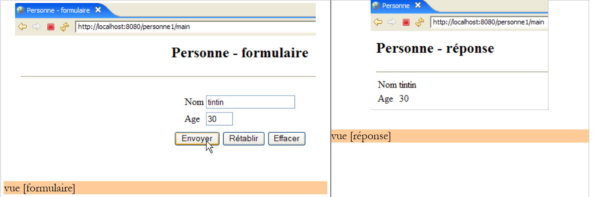
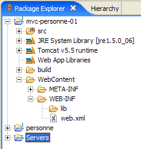
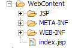
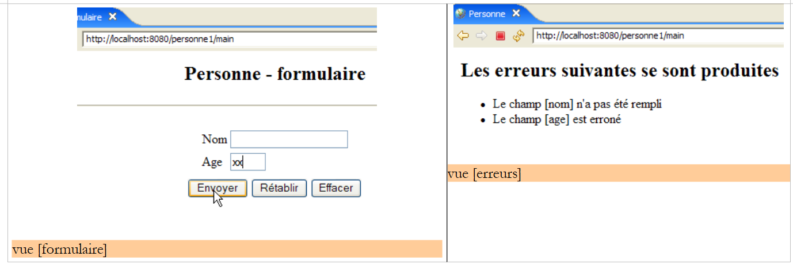
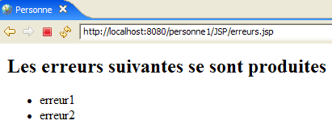

5. Webanwendung MVC [personne] – Version 1
5.1. Die Ansichten der Anwendung
Die Anwendung verwendet das in den vorherigen Beispielen verwendete Formular. Die erste Seite der Anwendung sieht wie folgt aus:

Wir bezeichnen diese Ansicht als Ansicht [formulaire]. Bei korrekter Eingabe werden die Daten in einer Ansicht angezeigt, die als [réponse] bezeichnet wird:

Bei fehlerhaften Eingaben werden die Fehler in einer Ansicht namens [erreurs] angezeigt:

5.2. Anwendungsarchitektur
Die Webanwendung [personne1] wird folgende Architektur aufweisen:

Es handelt sich um eine 1-Tier-Architektur: Es gibt keine Schichten [métier] oder [dao], sondern nur eine Schicht [web]. [ServletPersonne] ist der Anwendungscontroller, der alle Client-Anfragen verarbeitet. Um diese zu beantworten, verwendet er eine der drei Ansichten [formulaire, réponse, erreurs].
Wir müssen herausfinden, wie der Controller [ServletPersonne] die Aktion bestimmt, die er beim Empfang einer Anfrage eines Benutzers ausführen muss. Eine Client-Anfrage ist ein Datenstrom HTTP, der sich je nachdem unterscheidet, ob er mit einem Befehl GET oder POST gestellt wird.
Abfrage GET
In diesem Fall sieht der Datenfluss HTTP wie folgt aus:
Zeile 1 gibt die angeforderte URL an, zum Beispiel:
Diese URL kann verwendet werden, um die auszuführende Aktion festzulegen. Dazu stehen verschiedene Methoden zur Verfügung:
- Ein URL-Parameter gibt die Aktion an, zum Beispiel [/appli?action=ajouter&id=4]. Hier teilt der Parameter [action] dem Controller mit, welche Aktion von ihm angefordert wird.
- Das letzte Element der URL gibt die Aktion an, zum Beispiel [/appli/ajouter?id=4]. Hier wird das letzte Element der URL [/ajouter] vom Controller verwendet, um die auszuführende Aktion zu bestimmen.
Es sind auch andere Lösungen möglich. Die beiden zuvor genannten sind gängig.
Anfrage POST
In diesem Fall sieht der Datenfluss HTTP wie folgt aus:
Zeile 1 gibt die angeforderte URL an, zum Beispiel:
Diese URL kann verwendet werden, um die auszuführende Aktion anzugeben, wie bei GET. Im Fall von GET war der Parameter [action] in URL integriert. Dies kann auch hier der Fall sein, wie in:
Der Parameter [action] kann jedoch auch in den gesendeten Parametern (Zeile 15 oben) enthalten sein, wie in:
Im Folgenden werden wir diese verschiedenen Techniken nutzen, um dem Controller mitzuteilen, was er tun soll:
- den Parameter action in die angeforderte URL einfügen:
- den Parameter action per POST senden:
- Verwenden Sie das letzte Element der URL als Aktionsnamen:
5.3. Das Eclipse-Projekt
Um das Eclipse-Projekt [mvc-personne-01] der Webanwendung [personne1] anzulegen, befolgen Sie die in Abschnitt 3.1 beschriebene Vorgehensweise.

Der standardmäßig vorgeschlagene Kontext [mvc-personne-01] wird nicht beibehalten. Es wird [personne1] gewählt, wie unten dargestellt:

Das Ergebnis sieht wie folgt aus:

Sollte man den Kontext der Webanwendung ändern wollen, verwendet man die Option [clic droit sur projet -> Properties -> J2EE]:

Der neue Kontext wird in [1] angegeben.
Wir erstellen einen Unterordner [vues] im Ordner [WEB-INF]: [clic droit sur WEB-INF -> New -> Folder]:
 |  |
Das neue Projekt sieht nun wie folgt aus:

Nach Fertigstellung wird das Projekt wie folgt aussehen:

- Der Controller [ServletPersonne] befindet sich im Ordner [src]
- Die Seiten JSP der Ansichten [formulaire, réponse, erreurs] befinden sich im Ordner [WEB-INF/vues], wodurch der Benutzer sie nicht direkt aufrufen kann, wie das folgende Beispiel zeigt:

Im Folgenden werden die verschiedenen Komponenten der Webanwendung [/personne1] beschrieben. Der Leser wird gebeten, diese im Laufe der Lektüre anzulegen.
5.4. Konfiguration der Webanwendung [personne1]
Die Datei web.xml der Anwendung /personne1 sieht wie folgt aus:
<?xml version="1.0" encoding="UTF-8"?>
<web-app id="WebApp_ID" version="2.4"
xmlns="http://java.sun.com/xml/ns/j2ee"
xmlns:xsi="http://www.w3.org/2001/XMLSchema-instance"
xsi:schemaLocation="http://java.sun.com/xml/ns/j2ee http://java.sun.com/xml/ns/j2ee/web-app_2_4.xsd">
<display-name>mvc-personne-01</display-name>
<!-- ServletPersonne -->
<servlet>
<servlet-name>personne</servlet-name>
<servlet-class>
istia.st.servlets.personne.ServletPersonne
</servlet-class>
<init-param>
<param-name>urlReponse</param-name>
<param-value>
/WEB-INF/vues/reponse.jsp
</param-value>
</init-param>
<init-param>
<param-name>urlErreurs</param-name>
<param-value>
/WEB-INF/vues/erreurs.jsp
</param-value>
</init-param>
<init-param>
<param-name>urlFormulaire</param-name>
<param-value>
/WEB-INF/vues/formulaire.jsp
</param-value>
</init-param>
</servlet>
<!-- Zuordnung ServletPersonne-->
<servlet-mapping>
<servlet-name>personne</servlet-name>
<url-pattern>/main</url-pattern>
</servlet-mapping>
<!-- Startdateien -->
<welcome-file-list>
<welcome-file>index.jsp</welcome-file>
</welcome-file-list>
</web-app>
Was steht in dieser Konfigurationsdatei?
- Zeilen 34–37: Die Datei URL /main wird von dem Servlet namens „person“ verarbeitet
- Zeilen 10–13: Das Servlet mit dem Namen „person“ ist eine Instanz der Klasse „[ServletPersonne]“
- Zeilen 14–19: Definieren einen Konfigurationsparameter namens „[urlReponse]“. Dies ist die URL der Ansicht „[réponse]“.
- Zeilen 20–25: Definieren einen Konfigurationsparameter namens „[urlErreurs]“. Dies ist die URL der Ansicht „[erreurs]“.
- Zeilen 26–31: Definieren einen Konfigurationsparameter namens [urlFormulaire]. Dies ist die URL der Ansicht [formulaire].
- Zeile 40: [index.jsp] wird die Startseite der Anwendung sein.
Die URLs der Seiten JSP der Ansichten [formulaire, réponse, erreurs] sind jeweils Gegenstand eines Konfigurationsparameters. Dadurch können sie verschoben werden, ohne dass die Anwendung neu kompiliert werden muss.
Wenn der Benutzer die URL [/personne1] aufruft, sendet die Datei [index.jsp] die Antwort (Startdatei, Zeile 40). Diese Datei befindet sich im Stammverzeichnis des Ordners [WebContent]:

Ihr Inhalt lautet wie folgt:
<%@ page language="java" contentType="text/html; charset=ISO-8859-1"
pageEncoding="ISO-8859-1"%>
<!DOCTYPE HTML PUBLIC "-//W3C//DTD HTML 4.01 Transitional//EN">
<%
response.sendRedirect("/personne1/main");
%>
Die Seite [index.jsp] leitet den Client lediglich auf die URL [/personne1/main] weiter. Wenn der Browser also die URL [/personne1] anfordert, sendet [index.jsp] ihm die folgende Antwort HTTP:
- Zeile 1: Antwort „HTTP/1.1“, um dem Server mitzuteilen, dass er zu einer anderen URL „URL“ weiterleiten soll
- Zeile 4: die URL, zu der der Browser umgeleitet werden soll
Nach dieser Antwort fordert der Browser also die URL [/personne1/main] an, wie es ihm vorgeschrieben wurde (Zeile 4). Die Datei [web.xml] der Anwendung [/personne1] gibt an, dass diese Anfrage vom Controller [ServletPersonne] bearbeitet wird (Zeilen 35–36).
5.5. Der Code der Ansichten
Wir beginnen die Entwicklung der Webanwendung mit der Erstellung ihrer Ansichten. Diese ermöglichen es, die Anforderungen des Benutzers an die grafische Benutzeroberfläche zu erfassen, und können ohne den Controller getestet werden.
5.5.1. Die Ansicht [formulaire]
Diese Ansicht ist die des Formulars zur Eingabe von Name und Alter:

Typ HTML | Name | Rolle | |
<input type="text"> | txtNom | Namenseingabe | |
<input type="text"> | txtAge | Alter eingeben | |
<input type="submit"> | Übermittlung der eingegebenen Werte an den Server unter der URL /personne1/main | ||
<input type= "reset "> | um die Seite in den Zustand zurückzusetzen, in dem sie ursprünglich vom Browser empfangen wurde | ||
<input type= "button "> | um den Inhalt der Eingabefelder [1] und [2] zu löschen |
Sie wird von der Seite JSP [formulaire.jsp] generiert. Ihr Template besteht aus folgenden Elementen:
- [nom]: ein Name (String), der in den Sitzungsattributen unter dem Schlüssel „nom“ gefunden wurde
- [age]: ein Alter (String), das in den Sitzungsattributen unter dem Schlüssel „age“ gefunden wurde
Die Ansicht [formulaire] wird aufgerufen, wenn der Benutzer die URLs [/personne1/main], c.a.d oder die URL des Controllers [ServletPersonne] aufruft. Der Code der Seiten JSP und [formulaire.jsp], die die Ansicht [formulaire] generieren, lautet wie folgt:
<%@ page language="java" contentType="text/html; charset=ISO-8859-1"
pageEncoding="ISO-8859-1"%>
<!DOCTYPE HTML PUBLIC "-//W3C//DTD HTML 4.01 Transitional//EN">
<%
// Die Daten aus der Vorlage werden abgerufen
String nom=(String)request.getAttribute("nom");
String age=(String)request.getAttribute("age");
%>
<html>
<head>
<title>Personne - formulaire</title>
</head>
<body>
<center>
<h2>Personne - formulaire</h2>
<hr>
<form method="post">
<table>
<tr>
<td>Nom</td>
<td><input name="txtNom" value="<%= nom %>" type="text" size="20"></td>
</tr>
<tr>
<td>Age</td>
<td><input name="txtAge" value="<%= age %>" type="text" size="3"></td>
</tr>
<tr>
</table>
<table>
<tr>
<td><input type="submit" value="Envoyer"></td>
<td><input type="reset" value="Rétablir"></td>
<td><input type="button" value="Effacer"></td>
</tr>
</table>
<input type="hidden" name="action" value="validationFormulaire">
</form>
</center>
</body>
</html>
- Zeilen 6–7: Die Seite JSP beginnt damit, aus der Abfrage [request] die Elemente [nom, age] ihres Modells abzurufen. Im normalen Betriebsablauf der Anwendung wird dieses Modell vom Controller [ServletPersonne] erstellt.
- Zeilen 18–38: Die Seite JSP generiert ein Formular HTML (Tag <form>)
- Zeile 18: Das Tag <form> enthält kein Attribut action zur Angabe der URL, die die vom Button [Envoyer] vom Typ submit (Zeile 32) gesendeten Werte verarbeiten soll. Die Werte des Formulars werden dann an die URL gesendet, von der das Formular abgerufen wurde, d. h. an die URL des Controllers [ServletPersonne]. Somit wird dieser sowohl zur Generierung des ursprünglich von einem GET angeforderten leeren Formulars als auch zur Verarbeitung der eingegebenen Daten verwendet, die über die Schaltfläche [Envoyer] an ihn übermittelt werden.
- Die übermittelten Werte stammen aus den Feldern HTML, [txtNom] (Zeile 22), [txtAge] (Zeile 26) und [action] (Zeile 37). Anhand dieses letzten Parameters kann der Controller erkennen, was er tun muss.
- Bei der ersten Anzeige des Formulars werden die Eingabefelder [txtNom, txtAge] jeweils mit den Variablen [nom] (Zeile 22) und [age] (Zeile 26) initialisiert. Diese Variablen erhalten ihre Attributwerte aus der Abfrage (Zeilen 6–7), wobei bekannt ist, dass diese Attribute vom Servlet initialisiert werden. Somit legt das Servlet den Anfangsinhalt der Eingabefelder des Formulars fest.
- Zeile 33: Die Schaltfläche [Rétablir] vom Typ [reset] ermöglicht es, das Formular in den Zustand zurückzusetzen, in dem es sich befand, als der Browser es empfangen hat.
- Zeile 34: Die Schaltfläche „[Effacer]“ vom Typ „[reset]“ hat derzeit keine Funktion.
Im Folgenden werden wir diese Ansicht als „[formulaire(nom, age)]“ bezeichnen, wenn wir sowohl den Namen der Ansicht als auch ihr Modell angeben möchten. Außerdem sei daran erinnert, dass beim Klicken des Benutzers auf die Schaltfläche [Envoyer] die Parameter [txtNom, txtAge] an die URL [/personne1/main] gesendet werden.
5.5.2. Die Ansicht [reponse]
Diese Ansicht zeigt die im Formular eingegebenen Werte an, sofern diese gültig sind:

Sie wird von der Seite JSP [reponse.jsp] generiert. Ihr Template besteht aus folgenden Elementen:
- [nom]: ein Name (String), der in den Sitzungsattributen unter dem Schlüssel „nom“ zu finden ist
- [age]: ein Alter (String), das in den Sitzungsattributen unter dem Schlüssel „age“ zu finden ist
Der Code der Seite JSP [reponse.jsp] lautet wie folgt:
<%@ page language="java" contentType="text/html; charset=ISO-8859-1"
pageEncoding="ISO-8859-1"%>
<!DOCTYPE HTML PUBLIC "-//W3C//DTD HTML 4.01 Transitional//EN">
<%
// Daten aus dem Modell abrufen
String nom=(String)request.getAttribute("nom");
String age=(String)request.getAttribute("age");
%>
<html>
<head>
<title>Personne</title>
</head>
<body>
<h2>Personne - réponse</h2>
<hr>
<table>
<tr>
<td>Nom</td>
<td><%= nom %>
</tr>
<tr>
<td>Age</td>
<td><%= age %>
</tr>
</table>
</body>
</html>
- Zeilen 6–7: Die Seite JSP beginnt damit, aus der Anfrage [request] die Elemente [nom, age] ihres Modells abzurufen. Im normalen Betriebsablauf der Anwendung wird dieses Modell vom Controller [ServletPersonne] erstellt.
- Die Elemente [nom, age] des Modells werden anschließend in den Zeilen 20 und 24 angezeigt.
Im Folgenden bezeichnen wir diese Ansicht als die Ansicht [réponse(nom, age)].
5.5.3. Die Ansicht [erreurs]
Diese Ansicht meldet Eingabefehler im Formular:

Sie wird von der Seite JSP [erreurs.jsp] generiert. Ihre Vorlage besteht aus folgenden Elementen:
- [erreurs]: eine Liste (ArrayList) von Fehlermeldungen, die in den Abfrageattributen unter dem Schlüssel „Fehler“ zu finden ist
Der Code der Seite JSP [erreurs.jsp] lautet wie folgt:
<%@ page language="java" contentType="text/html; charset=ISO-8859-1"
pageEncoding="ISO-8859-1"%>
<!DOCTYPE HTML PUBLIC "-//W3C//DTD HTML 4.01 Transitional//EN">
<%@ page import="java.util.ArrayList" %>
<%
// Daten aus dem Modell abrufen
ArrayList erreurs=(ArrayList)request.getAttribute("erreurs");
%>
<html>
<head>
<title>Personne</title>
</head>
<body>
<h2>Les erreurs suivantes se sont produites</h2>
<ul>
<%
for(int i=0;i<erreurs.size();i++){
out.println("<li>" + (String) erreurs.get(i) + "</li>\n");
}//für
%>
</ul>
</body>
</html>
- Zeile 8: Die Seite JSP ruft zunächst aus der Abfrage [request] das Element [erreurs] ihres Modells ab. Dieses Element stellt ein Objekt vom Typ ArrayList dar, das Elemente vom Typ String enthält. Bei diesen Elementen handelt es sich um Fehlermeldungen. Im Normalbetrieb der Anwendung wird dieses Modell vom Controller [ServletPersonne] aufgebaut.
- Zeilen 18–22: Zeigen die Liste der Fehlermeldungen an. Dazu muss Java-Code in den HTML-Körper der Seite geschrieben werden. Man sollte stets darauf achten, diesen auf ein Minimum zu reduzieren, um den HTML-Code nicht zu überladen. Wir werden später sehen, dass es Lösungen gibt, mit denen sich die Menge an Java-Code in den JSP-Seiten reduzieren lässt.
- Zeile 4: Beachten Sie das Import-Tag für die Pakete, die für die Seite JSP erforderlich sind.
Im Folgenden bezeichnen wir diese Ansicht als die Ansicht [erreurs(erreurs)].
5.6. Testen der Ansichten
Es ist möglich, die Gültigkeit der Seiten JSP zu testen, ohne den Controller geschrieben zu haben. Dazu müssen zwei Bedingungen erfüllt sein:
- Man muss sie direkt in der Anwendung aufrufen können, ohne den Controller zu durchlaufen
- die Seite JSP muss das Modell selbst initialisieren, das normalerweise vom Controller erstellt wird
Um diese Tests durchzuführen, duplizieren wir die Seiten JSP der Ansichten in den Ordner [/WebContent/JSP] des Eclipse-Projekts:

Anschließend werden die Seiten im Ordner „JSP“ wie folgt geändert:
[formulaire.jsp]:
...
<%
// -- Test: Die Seitenvorlage wird erstellt
request.setAttribute("nom","tintin");
request.setAttribute("age","30");
%>
<%
// Die Daten der Vorlage werden abgerufen
String nom=(String)request.getAttribute("nom");
String age=(String)request.getAttribute("age");
%>
<html>
<head>
...
Die Zeilen 3–7 wurden hinzugefügt, um die Vorlage zu erstellen, die die Seite in den Zeilen 11–12 benötigt.
[reponse.jsp]:
...
<%
// -- Test: Die Seitenvorlage wird erstellt
request.setAttribute("nom","milou");
request.setAttribute("age","10");
%>
<%
// Die Daten der Vorlage werden abgerufen
String nom=(String)request.getAttribute("nom");
String age=(String)request.getAttribute("age");
%>
<html>
<head>
...
Die Zeilen 3–7 wurden hinzugefügt, um die Vorlage zu erstellen, die die Seite in den Zeilen 11–12 benötigt.
[erreurs.jsp]:
...
<%
// -- Test: Die Seitenvorlage wird erstellt
ArrayList<String> erreurs1=new ArrayList<String>();
erreurs1.add("erreur1");
erreurs1.add("erreur2");
request.setAttribute("erreurs",erreurs1);
%>
<%
// Daten aus der Vorlage abrufen
ArrayList erreurs=(ArrayList)request.getAttribute("erreurs");
%>
<html>
<head>
...
Die Zeilen 3–9 wurden hinzugefügt, um die Vorlage zu erstellen, die die Seite in Zeile 13 benötigt.
Starten Sie Tomcat, falls dies noch nicht geschehen ist, und rufen Sie dann die folgenden URLs auf:
 |  |
 |
Wir erhalten tatsächlich die erwarteten Ansichten. Da wir nun ein angemessenes Vertrauen in die Seiten „JSP“ der Anwendung haben, können wir mit dem Schreiben des zugehörigen Controllers „[ServletPersonne]“ fortfahren.
5.7. Der Controller [ServletPersonne]
Nun muss noch das Herzstück unserer Webanwendung geschrieben werden: der Controller. Seine Aufgabe besteht darin:
- die Anfrage des Clients entgegenzunehmen,
- die vom Kunden angeforderte Aktion zu verarbeiten,
- als Antwort die entsprechende Ansicht zurückzusenden.
Der Controller [ServletPersonne] wird die folgenden Aktionen verarbeiten:
Nr. | Anfrage | Herkunft | Verarbeitung |
1 | [GET /personne1/main] | vom Benutzer eingegebene URL | - die leere Ansicht [formulaire] senden |
2 | [POST /personne1/main] mit Parametern [txtNom, txtAge, Aktion] gesendet | Klick auf die Schaltfläche [Envoyer] in der Ansicht [formulaire] | - die Werte der Parameter [txtNom, txtAge] überprüfen - Falls sie falsch sind, die Ansicht [erreurs(erreurs)] senden - sind sie korrekt, die Ansicht [reponse(nom,age)] senden |
Die Anwendung startet, wenn der Benutzer die URL [/personne1/main] aufruft. Gemäß der Datei [web.xml] der Anwendung (siehe Abschnitt 5.4) wird diese Anfrage von einer Instanz vom Typ ServletPersonne verarbeitet, die wir nun beschreiben.
5.7.1. Grundgerüst des Controllers
Der Code des Controllers [ServletPersonne] lautet wie folgt:
- Zeilen 20–22: Die Methode [init], die beim ersten Laden des Servlets ausgeführt wird
- Zeilen 25–28: Die Methode [doGet], die vom Webserver aufgerufen wird, wenn eine Anfrage vom Typ GET an die Anwendung gestellt wurde
- Zeilen 42–46: Die Methode [doPost] wird vom Webserver aufgerufen, wenn eine Anfrage vom Typ POST an die Anwendung gestellt wurde. Wie zu sehen ist, wird diese ebenfalls von der Methode [doGet] verarbeitet (Zeile 45).
- Zeilen 31–33: Die Methode [doInit] verarbeitet die Aktion Nr. 1 [GET /personne1/main]
- Zeilen 36–39: Die Methode [doValidationFormulaire] verarbeitet die Aktion Nr. 2 [POST /personne1/main] mit den übermittelten Parametern [txtNom, txtAge, action].
Wir beschreiben nun die verschiedenen Methoden des Controllers
5.7.2. Initialisierung des Controllers
Wenn die Controller-Klasse vom Servlet-Container geladen wird, wird ihre Methode [init] ausgeführt. Dies geschieht nur einmal. Sobald der Controller in den Arbeitsspeicher geladen ist, verbleibt er dort und verarbeitet die Anfragen der verschiedenen Clients. Für jeden Client wird ein eigener Ausführungs-Thread angelegt, sodass die Methoden des Controllers gleichzeitig von verschiedenen Threads ausgeführt werden. Es sei daran erinnert, dass der Controller aus diesem Grund keine Felder haben darf, die von seinen Methoden geändert werden könnten. Seine Felder müssen schreibgeschützt sein. Sie werden von der Methode [init] initialisiert, was deren Hauptaufgabe ist. Diese Methode hat nämlich die Besonderheit, dass sie nur einmal von einem einzigen Thread ausgeführt wird. Es gibt daher in dieser Methode keine Probleme mit konkurrierendem Zugriff auf die Felder des Controllers. Die Methode [init] dient dazu, die für die Webanwendung erforderlichen Objekte zu initialisieren, die von allen Client-Threads im schreibgeschützten Modus gemeinsam genutzt werden. Diese gemeinsam genutzten Objekte können an zwei Stellen platziert werden:
- in den privaten Feldern des Controllers
- im Ausführungskontext der Anwendung (ServletContext)
Der Code der Methode [init] des Controllers [ServletPersonne] lautet wie folgt:
- Zeile 16: Die Konfiguration der Webanwendung c.a.d wird abgerufen. Der Inhalt der Datei [web.xml]
- Zeilen 19–29: Es werden die Initialisierungsparameter des Servlets abgerufen, deren Namen in der Tabelle [paramètres] in Zeile 9 definiert sind
- Zeile 21: Der Wert des Parameters wird abgerufen
- Zeile 25: Fehlt der Parameter, wird der Fehler zur ursprünglich leeren Fehlerliste [erreursInitialisation] hinzugefügt (Zeile 8).
- Zeile 28: Ist der Parameter vorhanden, wird er mit seinem Wert im ursprünglich leeren Wörterbuch [params] (Zeile 10) gespeichert.
- Zeilen 31–35: Der Parameter [urlErreurs] muss zwingend vorhanden sein, da er die URL der Ansicht [erreurs] angibt, die eventuelle Initialisierungsfehler anzeigen kann. Falls dieser nicht vorhanden ist, wird die Anwendung durch den Aufruf von [ServletException] (Zeile 33) abgebrochen.
5.7.3. Die Methode [doGet]
Die Methode [doGet] verarbeitet sowohl die Anfragen GET als auch POST im Servlet, da die Methode [doPost] auf die Methode [doGet] verweist. Ihr Code lautet wie folgt:
- Zeilen 18–25: Es wird überprüft, ob die Liste der Initialisierungsfehler leer ist. Ist dies nicht der Fall, wird die Ansicht [erreurs(erreursInitialisation)] angezeigt, die den oder die Fehler meldet.
Um diesen Code zu verstehen, muss man sich an das Modell der Ansicht [erreurs] erinnern:
<%
// Daten aus der Vorlage abrufen
ArrayList erreurs=(ArrayList)request.getAttribute("erreurs");
%>
Die Ansicht [erreurs] erwartet in der Anfrage ein Schlüsselelement „fehler“. Der Controller erstellt dieses Element in Zeile 20.
- Zeile 28: Es wird die Methode [get] oder [post] abgerufen, die der Client für seine Anfrage verwendet hat
- Zeile 30: Der Wert des Parameters [action] aus der Anfrage wird abgerufen. Zur Erinnerung: In unserer Anwendung verfügt nur die Anfrage Nr. 2 ([POST /personne1/main]) über den Parameter [action]. In dieser Anfrage hat er den Wert [validationFormulaire].
- Zeilen 31–34: Wenn der Parameter [action] nicht vorhanden ist, wird ihm der Wert „init“ zugewiesen. Dies ist bei der ersten Anfrage Nr. 1 [GET /personne1/main] der Fall.
- Zeilen 36–40: Verarbeitung der Anfrage Nr. 1 [GET /personne1/main].
- Zeilen 41–45: Verarbeitung der Anfrage Nr. 2 [POST /personne1/main].
- Zeile 47: Wenn keiner der beiden vorangegangenen Fälle vorliegt, wird so verfahren, als wäre Fall Nr. 1 gegeben
5.7.4. Die Methode [doInit]
Diese Methode verarbeitet die Anfrage Nr. 1 [GET /personne1/main]. Bei dieser Anfrage muss sie die leere Ansicht [formulaire(nom,age)] senden. Ihr Code lautet wie folgt:
- Zeilen 18–19: Die Ansicht [formulaire] wird angezeigt. Zur Erinnerung: Das von dieser Ansicht erwartete Modell lautet:
<%
// Daten aus der Vorlage abrufen
String nom=(String)request.getAttribute("nom");
String age=(String)request.getAttribute("age");
%>
- Zeilen 16–17: Das Modell [nom,age] der Ansicht [formulaire] wird mit leeren Zeichenfolgen initialisiert.
5.7.5. Die Methode [doValidationFormulaire]
Diese Methode verarbeitet die Anfrage Nr. 2 [POST /personne1/main], bei der die übermittelten Parameter [action, txtNom, txtAge] lauten. Ihr Code lautet wie folgt:
- Zeilen 16–17: Aus der Anfrage des Clients werden die Werte der Parameter „txtNom“ und „txtAge“ abgerufen.
- Zeilen 19–26: Die Gültigkeit dieser beiden Parameter wird überprüft
- Zeilen 28–33: Ist einer der Parameter fehlerhaft, wird die Ansicht [erreurs(erreursAppel)] angezeigt. Zur Erinnerung: Das Modell dieser Ansicht lautet:
<%
// Die Daten aus der Vorlage werden abgerufen
ArrayList erreurs=(ArrayList)request.getAttribute("erreurs");
%>
- Zeilen 35–38: Wenn die beiden abgerufenen Parameter „txtNom“ und „txtAge“ gültige Werte haben, wird die Ansicht [reponse(nom,age)] angezeigt. Man muss sich an das Modell der Ansicht [reponse] erinnern:
<%
// Daten aus dem Modell werden abgerufen
String nom=(String)request.getAttribute("nom");
String age=(String)request.getAttribute("age");
%>
5.8. Tests
Fügen wir das Projekt [mvc-personne-01] gemäß der in Abschnitt 3.3 beschriebenen Vorgehensweise in die Tomcat-Anwendungen ein:

Starten Sie Tomcat. Anschließend können die in Abschnitt 5.1 als Beispiel gezeigten Tests fortgesetzt werden. Es können weitere Tests hinzugefügt werden. Man kann beispielsweise einen der Konfigurationsparameter urlXXX in web.xml entfernen und das Ergebnis beobachten. Wie unten gezeigt, wird einer der Parameter in [web.xml] auskommentiert:
<!--
<init-param>
<param-name>urlFormulaire</param-name>
<param-value>
/WEB-INF/vues/formulaire.jsp
</param-value>
</init-param>
-->
Man startet bzw. startet Tomcat neu und ruft die URL [http://localhost:8080/personne1/main] auf. Man erhält folgende Antwort: